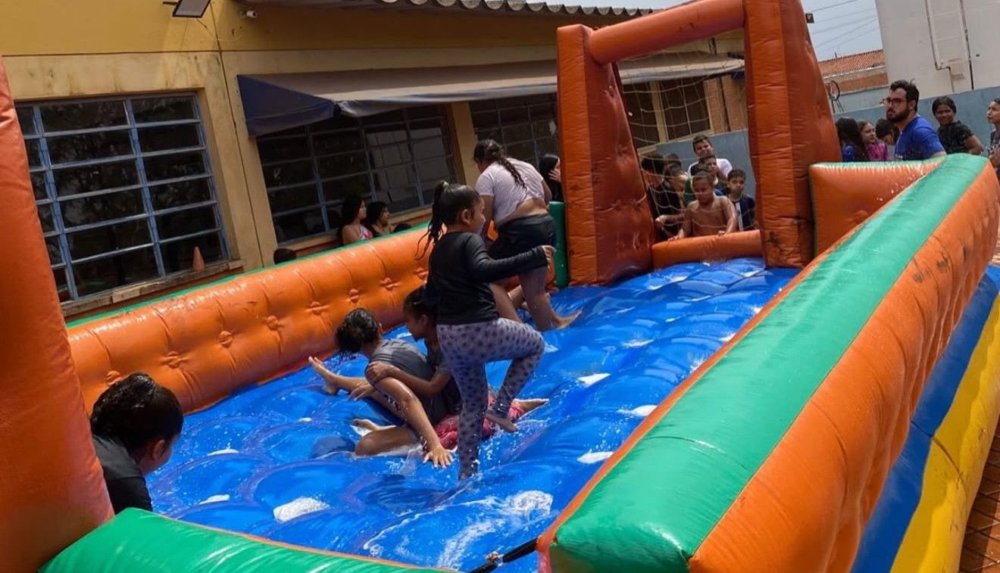

Passos de Esperança
Transformando vidas através da fé.
Quem nós somos
A Passos de Esperança é uma associação cristã sem fins lucrativos dedicada à formação e ao desenvolvimento de crianças e adolescentes em situação de vulnerabilidade social. Fundamentada nos valores cristãos, nossa missão é promover oportunidades que contribuam para o crescimento pessoal, social e educacional de cada criança e adolescente atendido. Por meio do esporte, da educação e da vivência de princípios como amor ao próximo, respeito, empatia e responsabilidade, buscamos construir um ambiente de acolhimento, aprendizado e esperança. Acreditamos que toda criança merece a oportunidade de desenvolver seu potencial, descobrir seus talentos e construir um futuro com mais possibilidades. Por isso, trabalhamos para fortalecer vínculos, incentivar sonhos e formar cidadãos conscientes, preparados para contribuir positivamente com suas famílias, suas comunidades e a sociedade.

O esporte ensina as crianças
O esporte é uma poderosa ferramenta de transformação, aprendizado e desenvolvimento humano. Muito além das atividades físicas, ele proporciona experiências que contribuem para a formação do caráter, ensinando valores essenciais como disciplina, respeito, responsabilidade, perseverança e trabalho em equipe. Por meio da prática esportiva, crianças e adolescentes aprendem a lidar com desafios, reconhecer suas próprias capacidades, respeitar as diferenças e compreender a importância da cooperação. Cada conquista, por menor que seja, representa uma oportunidade de crescimento e fortalecimento da autoconfiança. Dessa forma, o esporte se torna um importante instrumento de inclusão social, capaz de abrir caminhos, despertar talentos e inspirar novas perspectivas para o futuro.
Ensinamos com o AMOR
O amor é a base de tudo o que fazemos. Cada gesto, cada ensinamento e cada vitória são guiados pelo carinho e pela dedicação, criando vínculos que fortalecem o coração e a mente.
Ensinamos com a EMPATIA
A empatia nos permite compreender e valorizar as diferenças. Ao ensinar as crianças a se colocarem no lugar do outro, cultivamos respeito e solidariedade, essenciais para uma convivência harmoniosa.
Ensinamos com o RESPEITO
O respeito é fundamental para criar um ambiente saudável e inclusivo. Ao ensinar as crianças a respeitar-se e os outros, promovemos a convivência harmoniosa e o desenvolvimento de valores sólidos.
Ensinamos com a FÉ
A fé nos dá força para acreditar em nossos sonhos e nunca desistir. Inspiramos as crianças a confiarem em si mesmas e a manterem esperança, mesmo diante das dificuldades.
Encontre nossa localização
EMEIF Profª Mafalda Salotti Bartholomei · Rua Rio Claro, nº 285 · Vila Progresso